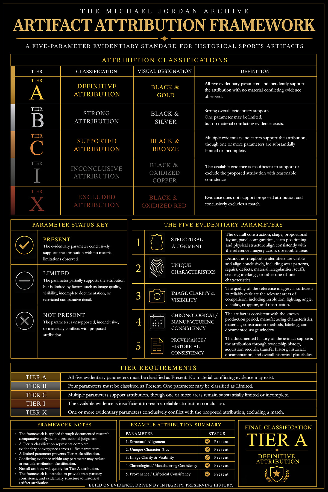

Artifact Attribution Framework
The Artifact Attribution Framework establishes the evidentiary standards used by The Michael Jordan Archive to classify historical sports artifacts. The framework provides a transparent structure for evaluating visual evidence, documented limitations, and the strength of a proposed attribution.
Not every artifact qualifies for definitive attribution. The framework is designed to distinguish between conclusive, supported, inconclusive, and excluded findings.
Browse framework
Purpose
The framework is intended to provide transparency, consistency, and evidentiary structure to historical artifact attribution.
Each artifact is evaluated through documented research, comparative analysis, and professional judgment. The framework does not force certainty where the photographic record is limited. Instead, it identifies the strength of the available evidence and assigns the appropriate classification.
A limited parameter may prevent definitive attribution, and conflicting evidence within any parameter may reduce or exclude attribution classification.
Attribution Classifications
Definitive Attribution
All five evidentiary parameters independently support the attribution with no material conflicting evidence observed.
Strong Attribution
Strong overall evidentiary support. One parameter may be limited, but no material conflicting evidence exists.
Supported Attribution
Multiple evidentiary indicators support the attribution, though one or more parameters are substantially limited or incomplete.
Inconclusive Attribution
The available evidence is insufficient to support or exclude the proposed attribution with reasonable confidence.
Excluded Attribution
Evidence does not support the proposed attribution and conclusively excludes a match.
The Five Evidentiary Parameters
Structural Alignment
The overall construction, shape, proportional layout, panel configuration, seam positioning, and physical structure align consistently with the reference imagery across observable areas.
Unique Characteristics
Distinct non-replicable identifiers are visible and align conclusively, including wear patterns, repairs, defects, material irregularities, scuffs, creasing, markings, or other one-of-one characteristics.
Image Clarity & Visibility
The quality of the reference imagery is sufficient to reliably evaluate the relevant areas of comparison, including resolution, lighting, angle, visibility, cropping, and obstruction.
Chronological / Manufacturing Consistency
The artifact is consistent with the known production period, manufacturing characteristics, materials, construction methods, labeling, and documented usage window.
Provenance / Historical Consistency
The documented history of the artifact supports the attribution through ownership history, acquisition records, transfer history, historical documentation, and overall historical plausibility.
Parameter Status Key
The evidentiary parameter conclusively supports the attribution with no material limitations observed.
The parameter partially supports the attribution but is limited by factors such as image quality, visibility, incomplete documentation, or restricted comparative detail.
The parameter is unsupported, inconclusive, or materially conflicts with the proposed attribution.
Official Framework
The official framework PDF provides the complete classification table, evidentiary parameters, status key, tier requirements, framework notes, and example attribution summary.
This document serves as the published reference standard for Michael Jordan Archive photographic attribution reports and research determinations.
The complete framework should be referenced when interpreting Michael Jordan Archive attribution reports and classification designations.

Version History
Version 1.0
Initial publication of the Michael Jordan Archive Artifact
Attribution Framework.
Build on evidence. Driven by integrity. Preserving history.